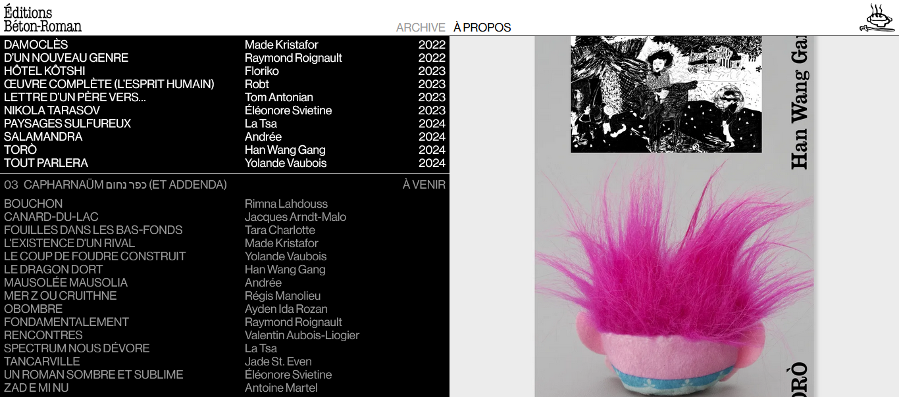
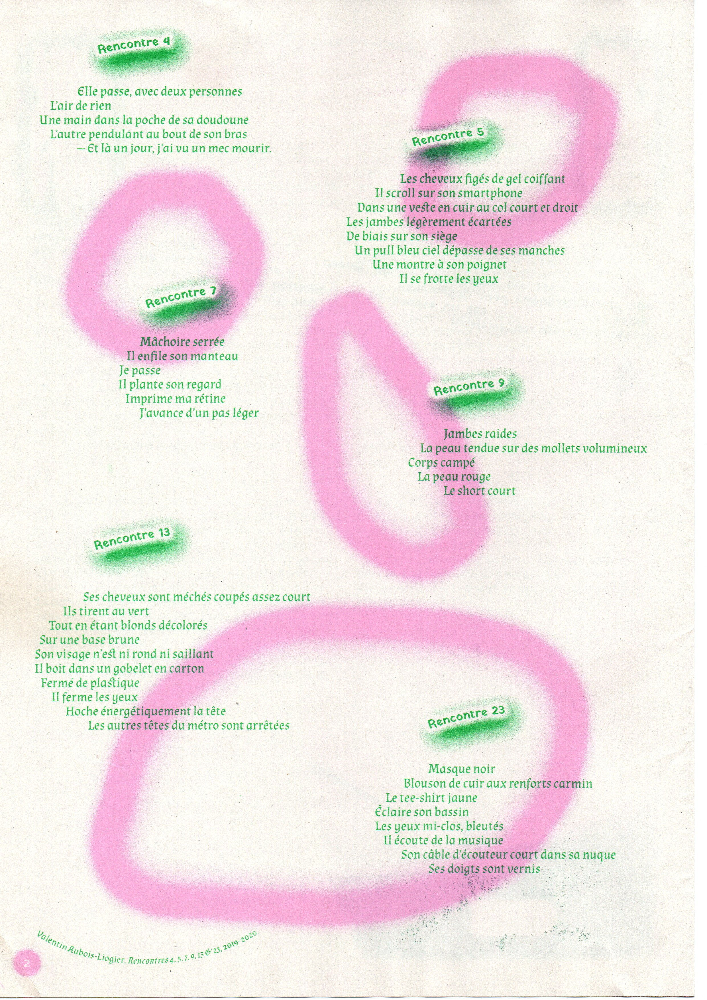

Rencontres
Poetry project led since 2019 with the same writing protocole.
Some poems, called Rencontres, were published in Sans Corps, a queer free autonomous fanzine by Enz@ Le Garrec.
Rencontres will be soon publish in an audio form by the publishing house Béton-Roman.

